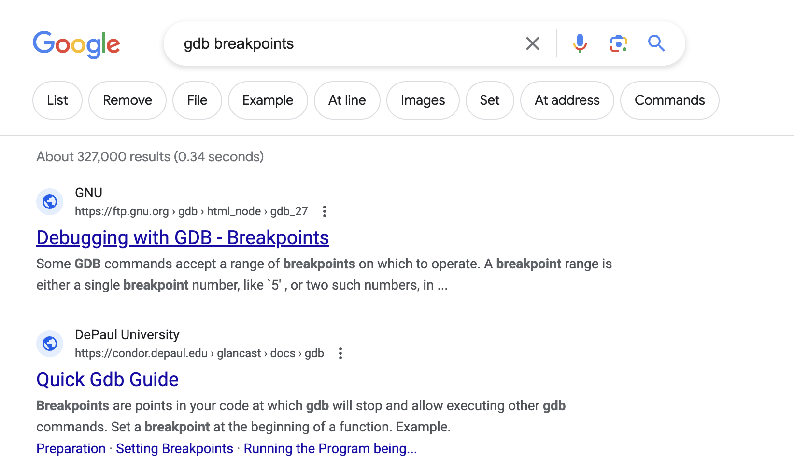

$$ \Huge \textbf{使用搜索引擎} $$
$$ \boxed{ \overbrace{\textit{degaokaolization}}^{\small{去高考化}} \text{ Discussion Group | Topic 00}} $$
$$ \boxed{\textbf{注意:} 最好使用英语阅读本系列文章. 中文仅供参考. } $$
高考之后, 我们获取的信息的方式就取得了根本性的突破 – 从老师、家长的嘴里被动地接受信息, 到我们主动地理解一些信息. 下面我们来看一看有哪些有趣的方法, 使得我们在查找信息的过程中更加简洁、高效.
在人们已经有了互联网之后, 必须要必须输入特定的网址才能访问他们知道的网站. 当时的人们为了更好地访问网络, 想到了这些招数:
用户依靠自己的主动性、个人网络和精心策划的资源集合来让自己查找信息的过程更加丝滑.
一个想法: 能不能想个办法把这些内容聚合起来?
Question. 如果你是当时希望把所有的信息整合起来, 你应该如何设计? \(\#\)
当时的希望: 有一个关键字就可以连起来所有的知识. 因此, 他们需要文本匹配的方式来找到已有资料中的内容. 举个例子: 假设文档库里面是这个

那么, 可以在使用搜索的时候我们就需要搜索gcc set breakpoints就更有可能被匹配到了. 现在, 你就应该理解为什么使用搜索引擎的时候需要合理地区分关键字的.
虽然现在我们的搜索引擎已经日益强大, 甚至很多搜索引擎可以与我们用自然语言交流. 但是我们总是可以使用最原始的操作, 来达到相对比较好的效果.
Takeaway Message. 一般来讲, 使用单词词组来搜索, 效率会高很多. \(\#\)
虽然上面的方法是好的, 但是有时候却无法完全满足我们的需求: 比如你在Linux(一个小众的操作系统)上面使用一个工具, 但是因为使用Windows的人非常多, 搜索关键词搜索会弹出很多Windows上这个工具的用法 – 这可不是我们想要的. 有没有什么方法做这个事情?
我们今天的搜索引擎当然早已经有了这样的内容.
Remark. 自己认为合理, 可实现的功能, 大概率已经实现过了. 所以只要找到应用的部分就好了. \(\#\)
Possible filters.
"Exact match" 精确匹配引号里面的内容site:xxx.com 在xxx.com域名里面搜索- 排除搜索结果结果中的含有这些的选项没事的时候倒是可以多点一点可信主页上面的链接 – 它们会在无意之间很有可能给你带来惊喜.
每年的6月份, 是全国高考的月份. 这之后, 一批批学生将要步入大学. 当然在这个间隙, 我也推荐大家思考这个有趣的问题:
Question. 回顾一下自己以前问过的问题, 有没有哪些问题, 现在有更新颖的视角来看了? (如: 为什么要学习? 等等) \(\#\)
不过高考专业的选择, 可能是大家做的第一个人生选择(竞赛生除外, 竞赛生已经做过至少一次重要的抉择了). 朱富海老师曾经说:"有人说中国教育重教缺育, 学校只是把有形的知识快速地灌输到孩子的脑袋里, 然而这些知识却不能内化成孩子们内心的素养."
事实上, 这在做抉择方面体现地淋漓尽致. 下面我们来像解决普通问题一样解决这个事情.
在这里已经假设大家已经有一个明确的专业了(事实上, 这个问题在当今的内卷的大环境下越来越难回答. 因此如果没有的话可能需要在将来继续探索). 以河南省的高考为例, 允许选择若干个平行志愿. 那么什么是平行志愿?
在百度搜索相关的关键字, 自然会出现很多关于此的解读. 那么, 应不应该信这个呢? 为了增强可信度, 我们可以阅读更多信息, 并且可以在指定的可信站点(如教育部、中国政府网的域名中搜索). 更简单的, 可以输入
教育部 平行志愿
就可以找到官方的网站了. 具体的一份参考如下: link.
可是这里面的信息还是很多. 这时候我们可以使用查找功能. 按下Ctrl-F, 之后再弹出的框内搜索平行志愿''. 这样, 所有的平行志愿''都会加黄色显示.
Remark. 事实上, 当前的大部分资料已经足够先进, 以至于我们可以进行"随机读取" – 先不用管上下文, 如果有不懂的地方再返回到上文中提到的概念进行进一步的理解. 这会省去很多不必要的麻烦. \(\#\)
经过多方确认后, 你已经知道了如何进行录取工作. 现在, 你可能会估计分数, 判定自己去哪个学校 – 当然, 这样做除了扫兴之外好像帮不了太大的忙 – 又不是上了大学就可以不学习成天玩了. 事实上, 大学要学的东西一学年(部分专业一学期)就能轻松超过高中三年的内容了.
于是静静地等省排名. 事实上, 每个大学每年在每个地区会有不同的招生计划. 这个一般在《招生考试之友》上面有. 但是具体排位大概是多少呢?
为了解决这个问题, 当时经常用的一款App: 夸克搜索指示它可以告诉我们最近几年这个专业最低的录取省排是多少 – 当然数据也是教育部那里借用的 – 嘿! 就像是一个搜索引擎一样.
有了最近的几年的最低分数线, 以及最近几年招生考试之友的招生人员信息, 我们应该如何看一看它的未来发展趋势呢? – 我们高中学习的线性回归就可以有一点帮助了, 只不过, 我们可以使用现代的表格处理软件(如Excel)进行预测.
这样, 你就为自己做了一次决策. 回顾一下: 有什么疏漏的? 在哪些地方可以优化? 这个技能是必备的, 也是必须的 – 因为未来的大学选课的教务系统可能也要用到类似的操作, 为了自己未来能够从容地面对将来的挑战, 就试着自己好好体会一下这个过程吧!
(题外话: 当年我也照样参考了大学生生活质量指北这个网站. 希望有所帮助. 但更多的帮助是希望告诉大家这个想法是怎样来的, 慢慢你也可以自己提出新想法了. )
这个故事同样发生在高考完的时候. 高考完之后AUGPath在家闲来无事, 打算把之前高中想看懂的东西再看看. 在无意间游走的时候, 从蒋炎岩老师的主页点进了尹一通老师的一门《组合数学》课程主页. 可惜服务器年久失修, 内容已经不能访问了. 求助南大的同学, 发现果然是因为老师不带这门课了, 服务器已经被关闭了. 该怎么办?
因此我提出的需求是: 有没有一个工具, 使得它可以保存其他网页在过去时间的状态? 答案是肯定的. 在Google类似的网站上搜索
Webpage past states
这个需求是合理的 – 毕竟有了这个大多数人就可以观察到他们之前想要看到的内容了. 理所当然地, 我们得到了线索: "Internet Wayback Machine". 当然就可以找到大约2015年那会上课的笔记和讲稿了.
不过好消息是, 带这门课的尹一通 老师今年又要教《组合数学》了!(Home)
尹一通老师对于教育问题有这非常深刻的见解. 这种认真的做事态度, 专业的学术水平确实不愧为大师.
我们的作业周五才截止。同学们还是尽量自己多花时间想一想，写好了再提交。作业和考试是两个性质的，作业的主要任务不是考核，而是做为一种训练。期末考试是有时间限制的，需要 在有限时间内检测出一个人的水平。而这门课不应该是所有的训练内容，都是在有限时间内以“力所能及”的方式就能顺理成章完 成的，不然就成了完成一些routine tasks了。“问题求解”能力的提升，势必需要对思维有一定程度的考验和挑战，尽量做出一些思维上的创新，克服一定的非平凡性 (nontriviality）才可以。大家还是不要老是觉得，所有的任务都应该是可以routinely完成的。这尤其在AI已经大行其道的今天，是一种不可取的态度了。 – 尹一通
下面的内容就比较偏向专业化的方向了. 对于计算机科学的学生, 我们希望大家拒绝使用全网页的中文翻译浏览英文网页, 并且使用Google, StackOverFlow这样高质量的英文社区.
但是似乎我们都不习惯使用英语 – 这很正常. 但是习惯了之后, 就能像和说中文有类似的体验了. 我们使用英语关键字, 是因为这些的原因:
提示: 我们可以在浏览器上安装插件, 使得我们可以顺利地实现
划词翻译''等功能. 我自己用的一个插件叫做侧边翻译(Edge Translate)'', 个人感觉还是不错的.
除此之外, 官方手册是一个很重要的信息来源: 官方手册包含了查找对象的所有信息, 关于查找对象的一切问题都可以在官方手册中找到答案. 通常官方手册的内容十分详细, 在短时间内通读一遍基本上不太可能, 因此你需要懂得"如何使用目录来定位你所关心的问题". 如果你希望寻找一些用于快速入门的例子, 你应该使用搜索引擎. (选自南京大学PA实验)
人生其实有一门课，就是不断地发掘自己，认识自己，看看什么事情可以让自己愿意花时间和精力去做，做的过程是快乐的，做完后是欣慰满足的。很多时候兴趣的养成，是靠因缘际遇碰到了，你花时间去做发现自己并不排斥，然后一路做下来，越来越专业，受到越来越多来自他人的正向反馈与自我的肯定，也就越来越愿意花时间去做，由此进入了正向的循环。但是需要注意的是，这个“因缘际遇”碰到的事情，不一定是你大学学的专业。 很多时候，我们被生活推着走，貌似18年的努力就是为了能上一个好大学，选择一个好专业。但是什么是好专业？大家眼中的好专业，就是好专业吗？现在的大学教育培养更多的是专业技能，缺失了很多能够让人自省、自察、自悟的人文关怀，社会的浮躁也多源于此，我曾在《浅谈国内高校编程语言教育》一文中写到：“这些对兴趣的专注和纯粹本应该是大学生在自己专业上该有的年轻的、百舸争流的样貌，如今却被年薪、房价和社会的物化价值观所左右。如果连我们国家顶尖大学的教育都摆脱不了物欲横流的浮躁，又如何完成国家民族集体人格的进一步塑造？” 我真心希望大家最终都能找到自己心中的“兴趣”，哪怕你现在学着计算机，以后却只想开一家奶茶店。这也许需要很长的一段时间，但是这一切却又很值得，寻找它的路上，你会更加了解自己，更加怡然自得，因为你一直在修改着属于自己幸福的定义。